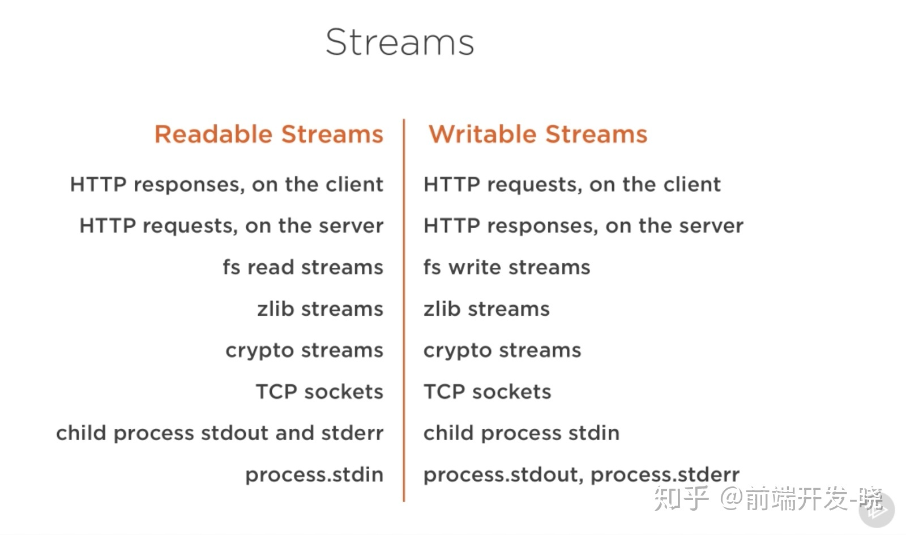

### Nodejs 中的 Stream
### 什么是 Stream ? > (Stream) 流 是一种数据传输的 集合 - 文件 I/O 网络 I/O 数据的传输 - 传输的数据是 Buffer 对象 - 有方向性: A(输出流| 可写流) => B (输入流| 可读流)
### Stream 的 四种类型 - Readable : 可读流 (fs.createReadStream()) - Writable : 可写流 (fs.createWriteStream()) - Duplex : 可读可写流 (net.Socket()) - Transform : 变换流 (zlib)
### 基于 Stream 的 nodejs 原生模块 
### 一个例子 ```js //1. 读取文件 const fs = require('fs'); const path = require('path'); //创建一个 可读流 const readable = fs.createReadStream( path.resolve(__dirname, '../react/.babelrc') ); //拿到标准输出 console.log(readable); //管道流向 进程的 标准输出流(1️⃣) 将文件内容打印出来 readable.pipe(process.stdout) //2. 写文件 const writable = fs.createWriteStream( path.resolve(__dirname,'console.js') ) writable.write('hello') ```
### process 三个标准流 - process.stderr 标准错误流 - process.stdout 标准输出流 - process.stdin 标准输入流
### 实现一个 低配版的 console.log() > 基于 process.stdout 标准输出流 ```js const { format } = require('util') class Console { static log(...text){ process.stdout.write(format.apply(null,text)) } } Console.log('哈哈','嘻嘻') //哈哈,嘻嘻 Console.log('哈哈 %s 呵呵',':') //哈哈 : 呵呵 ```
### 创建一个可读 流 > Readable ```js const { Readable } = require('stream') //继承 可读流 class MyReadable extends Readable { constructor(data){ super() this.data = data } //重写基类方法 往流写入数据 _read(){ this.data.forEach((text)=>{ this.push(text) }) //push(null) 表示数据流枯竭,已经没有新的数据了, 必须调用 this.push(null) } } const data = new Array(100).fill().map((_,i)=> String(i)) const myReadable = new MyReadable(data) myReadable.on('data',(data)=>{ console.log('data:',data.toString()); //buffer }) myReadable.on('end',()=>{ console.log('end'); }) myReadable.on('error',err => { console.log("error:",err); }) ```
### 实现 _read 方法 - `_read` 是生产数据的逻辑 通过它从底层读取数据 - `push(data)` 放入可读流中 - 所以数据 `push` 完成之后 需要调用 `push(null)` 结束当前可读流 此时不能再 push 数据了 - `push(data)` 在 同步 异步 方法 都可以
### 创建一个可写流 >Writable ```js const { Writable } = require('stream') class MyWritable extends Writable { //重写 write 方法 将流中的数据 传入底层 _write(data, encode, next){ //写入 标准输出流 process.stdout.write(data.toString()) // 调用 next() 表示 继续下一个 write process.nextTick(next) } } const myWritable = new MyWritable() //写入数据 myWritable.write('hello \n') myWritable.write('world \n') //如果 _write 方法 未调用 next() 'world' 写不进去 //表示无数据写入 myWritable.end() //结束之后 触发 finish 事件 myWritable.on('finish',()=>{ console.log('finish!'); }) ```
### 实现 _write 方法 - 实例化 可写流之后 调用 `write` 方法 写入数据 - 一个 write 方法 代表一个数据 , 调用 `next()` 方法 告诉流 处理下一个数据 - 调用 `.end()` 方法 表示当前可写流结束 此时 触发 `finish` 事件
### 创建一个可读可写流 >Duplex (继承了 Readable 和 Writable) ```js const { Duplex } = require('stream') class MyDuplex extends Duplex { constructor(data){ super() this.data = data } _read(){ console.log('read'); } _write(data, encode, next){ process.stdout.write(data.toString()) process.nextTick(next) } } const myDuplex = new MyDuplex() //往 可读流 添加数据 myDuplex.push('a') myDuplex.push('b') myDuplex.push(null) //往 可写流 添加数据 myDuplex.write('hello \n') myDuplex.write('world \n') myDuplex.end() myDuplex.on('data',(data)=>{ console.log('data:', data.toString()); }) myDuplex.on('finish',()=>{ console.log('finish'); }) ```
### 创建转换流 >Transform (继承了 Duplex) ```js const { Transform } = require('stream'); class MyTransform extends Transform { //因为 Transform 继承自 Duplex 所以不用实现 _read 和 _write _transform(data, decode, next) { console.log('data:',data.toString()); process.nextTick(next) } } const myMyTransform = new MyTransform('hello,world'); myMyTransform.write('hello') myMyTransform.write('world') myMyTransform.end() myMyTransform.on('data',(data)=>{ console.log('data:',data.toString()); }) ```
### 谢谢